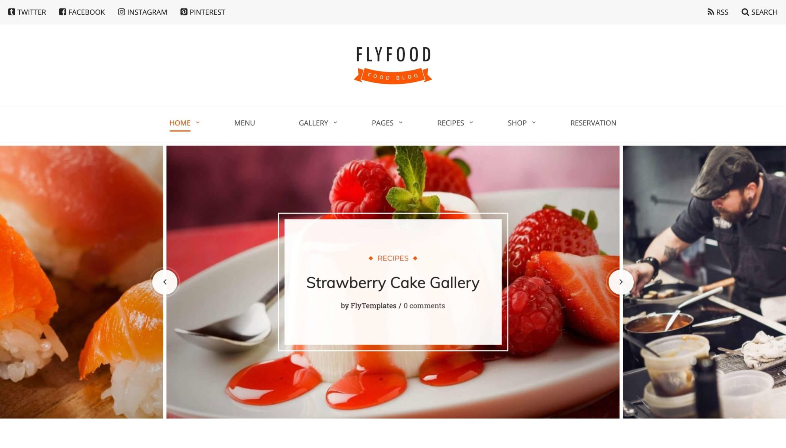

Week 3
During week 3, we revisited our proposal, reviewed our research ideas, and started the data collection process. We finalized our social media topic on food and health. Our project will analyze the top viral food recipes and trends in the United States. Each month, a shift in the most searched for and posted food recipes highlight American popular culture. The food industry is powerful and not at all that different from the fashion industry. Those in power such as TikTok influencers, food corporations, and celebrities, are the trendsetters. In the world of social media, users are exposed to major food trends that take over our grocery store shelves. Food trends that revolve around social media are inspirational in the sense that it has a meaningful impact on our health and taste buds. Several of these trends are creative and often expose folks to new culture foods. Culture is heavily involved in these food trends.
Insightful Sites
- https://www.cleaneatingmag.com/clean-living/culture/8-must-try-food-trends-that-went-viral-on-tiktok-this-year/
- https://www.timeout.com/news/revealed-the-most-popular-tiktok-food-trends-of-2021-011122
- https://kitchen.nine.com.au/latest/best-tiktok-food-trends-recipes-2021/3ebdaf3b-df3a-43ad-9d57-815ae54d35bf
TikTok is one of the most powerful social media platforms today. The cooking side of TikTok shows a variety of mouthwatering foods and trends that inspire users everyday. We were captivated by the creativity of creators and how easy replicating these recipes at home can be. These trends are a way to integrate healthy food options, grow the local economy, and build a sense of community. Sure enough, the food side of TikTok is a unique community of creators and users where ideas are shared and discussed. It is also inspiring how accessible (and free) these recipes are available to users. People can follow hashtags like #oatmeal or #coffee and get weekly highlights on what's gaining popularity. On top of hashtags, users can follow food influences based on the area and major geographies. As TikTok users ourselves, food trends are one of our interests.
Datasets
- Google trends https://trends.google.com/
This site allows us to analyze the popularity of top searches in the Google search engine. This data is categorized by subregions, time, and how many users searched for the topic. We are also able to compare and contrast topics. We plan on analyzing certain food trends from TikTok and use Google Trends to showcase how popular these trending topics are circulating in certain regions. For example, overnight oats took over TikTok by storm during the stay at home order. On Google trends, we can view how much this topic was surfed through by the region.
- Weather
We hope to describe how food trends are shaped by outside social factors such as weather. Certain food trends are seasonal. During the summer, we witness a rise in cold deserts while in the winter we see hot drinks trending much more frequently.
- Demographics https://www.census.gov/
The U.S Census Bureau is a helpful reliable tool that reveals demographic characteristics of American populations. Certainly, food trends are shaped by culture. By viewing the demographics, we can correlate how race, class, and sex play a citircal role in the circulation of food trends and who exactly follows these recipes. Metropolitan areas are heavily influenced by food trends due to food accessibility and population numbers compared to small urban areas with small populations. A great example is the consumption of plant based milk, where the availability is based on demographics.
Website Design
Map with demographics!
- Our site will be informative and blog styled site with tabs, images, layouts, shortcuts, and modules.
- We aim to have a clean map of certain food trends pinpointed in U.S regions. These pin points will have additional research on what the food is and why it is popular in that region. The colors, layout, and domain name are priority items that will make our site stand out. We are aiming for a food themed site that contains an about us tab, contact info, headers, data collection, and the purpose of our research.
- A food theme has to have a minimalistic style, an appealing design, and a clean layout.

Goals of the site
Trends are basically a community-wide conversation across social media, and people express themselves through their interpretations of them. In this case, we tend to follow and try food trends. Major brands, corporations, and restaurants use these trends to engage with their consumers. They too become part of the community and allow certain foods to be accessible.
Responsibilities and progress made by each group member
Everyone: Looked into TikTok recipes and contributed to website design ideas.
Tianna: Updated proposal, picked the 3 states for the West, looked into their demographics, and formatted this blog post.
Leonela: Write-up for this blog post, picked the 3 states for the Northeast, looked into their demographics, and did some data cleaning.
Irvin: Picked the 3 states for the South and looked into their demographics.
Michelle: Picked the 3 states for the Midwest, looked into their demographics, and did some data cleaning.